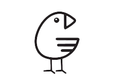

Gokotta - это функциональный язык программирования на основе лямбда-исчисления.
Язык универсален и может реализовывать рекурсию.
Все синтаксически отличные единицы пишутся через пробел (исключением выступают имена и значения).
В Gokotta определенные однопараметрические именованные функции.
Создаются они с помощью ключевого слова let, имени функции и ее тела.
Приведём пример простейшей функции без аргумента let.
Переменная FIVE
let FIVE
5
[FIVE] { 0 }
В данном примере была проинициализирована именованная функция FIVE с возвращаемым значением 5.
В последней строчке продемонстрирован ее вызов.
Для вызова функции необходимо заключать её название в квадратные скобки,
а аргумент указать в фигурных скобках [FIVE] { 0 }.
Так как функция FIVE не имеет аргументов, ей передаётся незначащий ноль.
Замечание: рекомендуется, чтобы в теле любого let
был использован как минимум один action (см. примеры ниже).
Согласно определению лямбда-исчисления в языке заданы аппликация и абстракция.
Аппликация - применение или вызов функции по отношению к заданному аргументу, с помощью [FUNC] { ARG }.
Абстракция - создание функции с помощью ключевых слов let, let_rec, action.
Это обеспечивает полноту языка.
Функции в Gokotta обладают свойством замыкания. То есть функции могут ссылаться на другие функции, объявленные вне ее тела и не являющиеся её параметрами.
Лямбда-выражения обозначаются ключевым словом action.
Лямбда-функция принимает на вход аргумент и вычисляет по нему заданное выражение.
Посе action идёт имя переменной, а затем выражение.
Если action возвращает только самого себя и не участвует в арифметическом выражении,
то необходимо возвращать его в виде примитивного выражения (например, умножение на 1 или сложение с 0)
или писать в качестве его аргумента { null }.
В языке определены следующие арифметические операции:
Арифметические выражения записываются в двойных угловых скобках: << выражение >>.
С помощью круглых скобок можно задавать порядок действий в выражении.
Приведём пример арифметических выражений на Gokotta.
Пусть у нас есть уравнение: x^2 + 2x - 3 = 0.
Попробуем найти сумму двух его решениями.
Арифметика
let a
action go_a << 1 >>
let b
action go_b << 2 >>
let c
action go_c << -3 >>
let d
action go_d << [b] { 0 } ** 2 - 4 * [a] { 0 } * [c] { 0 } >>
let x1
action go_x1 << ( ~ [b] { 0 } + [d] { 0 } ** 0,5 ) / ( 2 * [a] { 0 } ) >>
let x2
action go_x2 << ( ~ [b] { 0 } - [d] { 0 } ** 0,5 ) / ( 2 * [a] { 0 } ) >>
<< [x1] { 0 } + [x2] { 0 } >>
Корни уравнения: x1 = 1 и x2 = -3. Программа выводит результат (сумму x1 и x2) равный -2.
Gokotta работает как с целыми числами, так и с дробными.
Во втором случае дробная часть числа пишется через запятую/
точку в зависимости от региона: 1,5 или 1.5.
Преобразование целочисленного типа в тип с плавающей точкой происходит неявно, поэтому выражение,
в котором имеются два разных типа, будет корректно выполняться без необходимости явных приведений.
Инфиксная форма записи выражений является не единственной возможной для Gokotta. Особенностью языка является возможность записи арифметических выражений в польской нотации. Для этого арифметическое выражение нужно писать без угловых скобок.
В языке определён оператор условия if-else.
Если условие, следуемое после ключевого слова if верно,
то выполняется выражение следующее после него.
Иначе выполняется выражение после else.
Оператор if-else допускает вложенность.
В Gokotta есть возможность создавать рекурсивные функции.
Делается это при помощи ключевого слова let_rec.
В отличие от функции, заданной через let,
функция, созданная по средством let_rec
может вызывать саму себя в теле функции.
Используя let_rec, можно написать рекурсивную функцию нахождения факториала числа.
Факториал 10
let_rec fact
action x
if << [x] <= 1 >>
<< 1 >>
else
<< [x] * [fact] { << [x] - 1 >> } >>
<< [fact] { 10 } >>
После выполнения рекурсивной функции, программа выведет ответ: 3 628 800.
Во время написания или отладки кода, может понадобиться возможность оставить комментарий к коду или способ убрать часть кода из контекста выполнения программы.
Для этого в Gokotta введена возможность комментирования кода, с помощью оператора решётки, который стоит перед и после комментария # ... #. Все, что заключено в комментарий, игнорируется во время выполнения программы.
Комментарии
# Однострочный комментарий #
#
Комментарий
на
несколько
строк
#
По стандарту функции в языке могут принимать только один аргумент.
Но это можно исправить с мощью метода упаковки аргументов.
Определим функции с приставкой zip и unzip,
оторые упаковывают два целых числа в одно, а внутри функции распаковывают их.
Приведём пример программы, которая будет использовать упаковку аргументов.
Программа будет вычислять наибольший общий делитель для двух чисел меньших 10000.
Вычисление НОД для двух чисел
let a action go_a << 5 * 5 * 3 * 7 >>
let b action go_b << 5 * 3 >>
let zip_first
action go_zip_first
<< [go_zip_first] * 10000 >>
let zip_second
action go_zip_second
<< [go_zip_second] * 1 >> # или [go_zip_second] { null } #
let unzip_first
action go_unzip_first
<< [go_unzip_first] / 10000 >>
let unzip_second
action go_unzip_second
<< [go_unzip_second] % 10000 >>
let first
action go_first
<< [unzip_first] { [go_first] } >>
let second
action go_second
<< [unzip_second] { [go_second] } >>
let_rec NOD
action zip
if << [first] { [zip] } != 0 && [second] { [zip] } != 0 >>
if << [first] { [zip] } > [second] { [zip] } >>
<< [NOD] { << [zip_first] { << [first] { [zip] } % [second] {
[zip] } >> } + [zip_second] { [second] { [zip] } } >> } >>
else
<< [NOD] { << [zip_first] { [first] { [zip] } } + [zip_second] {
<< [second] { [zip] } % [first] { [zip] } >> } >> } >>
else
<< [first] { [zip] } + [second] { [zip] } >>
<< [NOD] { << [zip_first] { [a] { 0 } } + [zip_second] { [b] { 0 } } >> } >>
В языке реализованы следующие функции: